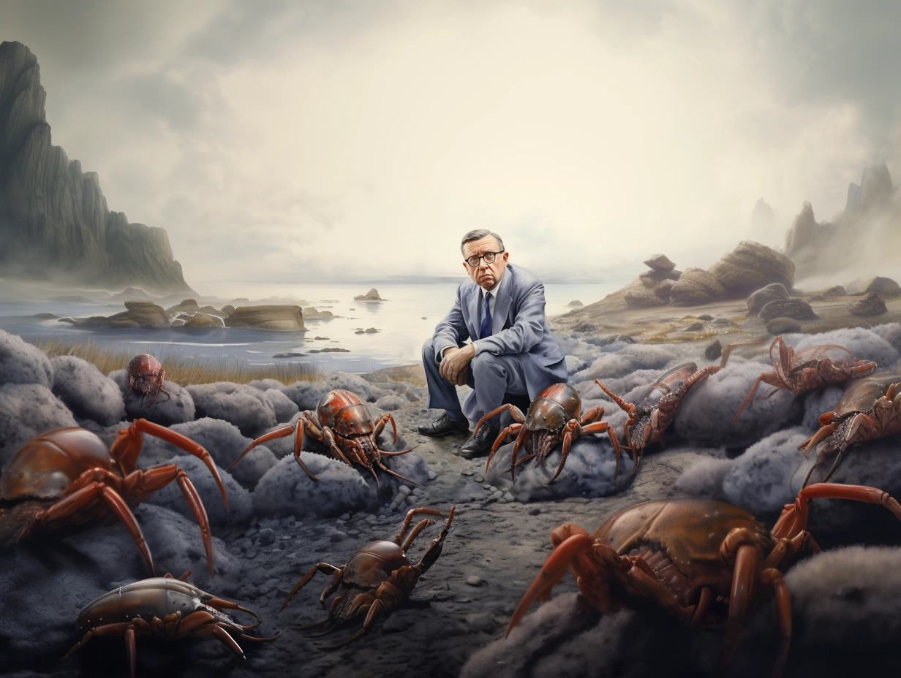

Sartre and the Lobsters
On Fear, Longing, and Love
In 1935, a bad trip triggered Jean-Paul Sartre’s deep-rooted fear of sea creatures. Suddenly, he found himself surrounded by crabs and lobsters. When the drug wore out, the crustaceans stayed. They followed him around everywhere. Slowly but surely, he grew accustomed — perhaps even attached — to them. Fully aware that his invertebrate companions were figments of his imagination, Sartre began to talk to them. He greeted them good morning after he woke up. And when he gave lectures, he asked if they could be quiet. They were.
After a year, he visited a psychiatrist. Together, they concluded Sartre was scared of being alone. The camaraderie that had been part of his life had begun to crumble, and apparently this had instilled a fear in him he hadn’t been aware of.
But once he’d identified it, his crustacean friends disappeared like snow before the sun. Sartre admitted he missed them.
This bizarre episode in Sartre’s life spurs a less peculiar question: Do the things we fear represent the things we most long for?
I’m not afraid of lobsters and crabs. As a child, I was fascinated by them. During vacations in Greece, I watched them scuttle off into the ocean and crawl along riversides. Much later, I learned that invertebrates have emotions, which made them even more interesting to me. They lack a backbone but do have a heart, or soul, or whatever you want to call the source of our ability to empathise and connect.

Sartre wasn’t aware of this. He claimed his fear was born in childhood, after he had seen a picture that made him terrified of lobsters and other sea creatures. To him, it wasn’t connected to anything but that. But perhaps, in some hallucinatory dimension, Sartre selected these (rather than other) creatures to keep him company for a while because he was ready to tackle his fears. This would make sense if we stick with Sartre’s existentialism — our actions follow from our own choices, and we’re responsible for all of them.
At the subconscious level, Sartre might have picked his worst tangible fear (crustaceans) to represent his worst abstract fear (losing his friends), thus forcing himself to face both.
Gradually, the arthropods showed him they were pretty harmless. At some point they even became his ten-legged friends. For a while, he embraced them. But he never considered them real. At some point, he believed he was having a nervous breakdown. So, while dwelling in their presence, he prepared himself for a bigger task — facing his true fear. And when he finally identified that deeper, more elusive existential anxiety, the hallucination was gone. Just like that.

“The only way out is through” has become somewhat of a truism, but it does bear truth. Sooner or later, most of us need to face the things we fear, especially when they relate to questions that lie at the heart of existence. (Don’t they all, in some way?)
Where that need comes from is a different question. According to essentialism, which asserts that essence is prior to existence, we’re either forced to face our fears or bound to accept them. This philosophy is built on the idea that life has an intrinsic purpose. We try and find it, but we don’t get to create it. Some people find this a reassuring thought, since it means we can never be held responsible for any of our actions. But it also implies we don’t have a say in anything. If destiny and fate dictate all events and actions, acceptance — or, rather, resignation — is our only choice.

Sartre’s discourse “Existentialism is a Humanism” can be broken down into five concepts: Existence precedes essence, Freedom, Responsibility, Anguish and Bad Faith.
Existentialism is founded on the opposite idea. Jean-Paul Sartre stated that existence precedes essence. More simply put, our choices shape and define us. Existence is a blank canvas, and every decision is a stroke of paint. Ultimately, all those separate strokes form a web that represents a life, the individual’s life — with the individual being the artist who’s fully responsible for their own existential painting.
Sartre believed life has no intrinsic meaning. According to him, the individual assigns meaning to existence. By making choices, they create a life of their own. If we follow that trail of thought, someone who has created fear can also choose to rid themselves of it.
I don’t call myself an existentialist, but I’m definitely no essentialist, either. There are just too many instances in life — including Sartre’s story — that show us we can overcome our fears. So we have at least some agency. Here, though, the interesting question is what fear represents — real danger or a hidden yet profound longing to connect?
Love and connection always come with the risk of loss. Nobody lives forever, and people who love each other rarely pass away simultaneously. So when entering into close relationships, chances are one person will survive the other. The beauty of intimacy is likely to cause you pain someday. And, like lobsters and crabs, humans have an ability to feel it — which is why we fear it.
Some people are aware of the risks that come with love but choose to embrace it anyway. “That’s life,” they say. Connecting with others comes easily to them.
But then there are those who try to protect themselves from potential pain. Whether that’s due to trauma or something else, the ‘shield’ they create has consequences. By fearing the loss of love, people alienate themselves from others before it’s ever truly begun. When stretched to extremes, this may cause them to never experience the pain of loss — but they won’t experience true love and connection, either.
At some level Sartre knew this, and he must have decided that enough is enough. He began to lose his friends. His biggest fear was materializing. So his mind ‘decided’ to confront him with that other fear of his — crustaceans. And it kept them around until he was ready to define what he truly dreaded.

Can we draw a line between people with psychiatric disorders and those without?
Both turned out to be not so scary after all.
Fear doesn’t always represent danger. In some cases, it tries to protect us from the pain that might come with something beautiful. (And sometimes that pain never materialises — could Sartre’s contemporary and one-time friend Camus ever have predicted many of his loved ones would survive him because he’d die in a car accident at 46?)
So, should we fight our fear of the things we actually long for? It’s a choice — no one can provide a manual for life. But a different perspective might help. If we can somehow accept transience, it might be easier to embrace love and relish the beautiful moments we experience.
Most of us won’t need drugs or a temporary cohabitation with imaginary lobsters and crabs to do this. If we don’t fear being alone, we probably won’t be for most of our lives. We’ll allow ourselves to build some genuine connections in the little time we spend on this planet.
And if that isn’t life, what is?
◊ ◊ ◊

Annalisa Koukouves is a storyteller, copywriter, and creative writer. In the past 14 years, she has interviewed hundreds of experts in the worlds of art, science, technology, and business to help them tell their stories in the form of books, scripts, (scientific) articles, essays, opinion pieces, and online content. She was a finalist in the 47th New Millennium Writing Awards and in one of Script Pipeline’s contests. Her work has appeared or is forthcoming in various outlets, including Pipeline Artists, Script Magazine, Thrive Global, and Daily Philosophy.
Annalisa is the founder of Key Copy & Content, a storytelling and copywriting business that helps professional storytellers and subject matter experts achieve two goals: to improve their writing skills and to build thought leadership through storytelling. Currently, she’s working on a novel.
Much of Annalisa’s writing zooms in on the individual to try and discover something about human nature. She has set up several projects to explore the intersection of philosophy and storytelling:
-
Existential Chapters (newsletter): Explore existential questions and make abstract concepts more tangible (sign up here).
-
Through The Storyteller’s Lens (YouTube channel): Learn more about storytelling and explore life’s major questions through interviews with professional storytellers who explain their approach to the craft and their philosophy of life (subscribe here).
-
Ideate & Create (newsletter): Receive storytelling insights and writing tips (sign up here).
Annalisa Koukouves | Key Copy & Content | Twitter | Instagram | YouTube
Annalisa Koukouves on Daily Philosophy: